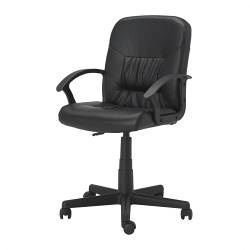
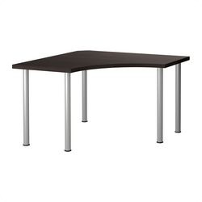
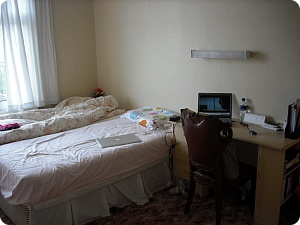
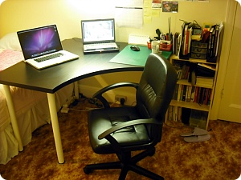

화창한 토요일 집에서 하루종일 로동;;
29일날 아침에 전화해서 재고확인하고
결국 다시 IKEA다녀왔음;; OTL
구입해서 배달신청하구 오늘받아서 아침부터
혼자 신나게 삽질;;
길찾는거랑 이런거 조립할때
진심 스스로가 멍탱구리로 느껴진다능;;;;
모님 말로는 이해력이 모자란거이전에
아예 생각할려는 시도를 안하는것 같다구 ㅋㅋㅋㅋ
☞☜사람이 좀 생각이란걸 하고살아야하는데 말입니다;;;


내가 구입한건 요 두개
moses(의자) / vika amon, vika curry(책상)
책상이 코너에 놓는 120x120사이즈인데
음청 넓어서 대만족 +_+

요게 이사오자마자 찍은사진
책상은 쓰라면 못쓸정도는 아니었는데
역시 폭이좁고;;; 컴두대 올려놓기엔 이래저래 무리가 많았음^^
그리고 저 (사진상에는 멀쩡하지만;;) 백만년되어보이는의자;;
쿠션이 다 꺼져서 30분만 앉아도 온몸이 뒤틀렸었는데
흑 ㅜㅜ 살거같다
혼자 두시간넘게 낑낑대며 조립한 보람있었음;;;
이게 요령이 있어야하는데
무식하게(....) 힘으로 다 해결할려고해서;;;
나사하나하나 조이는게 왜이리 어렵나요;ㅂ;

책상&의자 교체끗
서랍장이 사라져서 촘 아쉽지만
우선 작업공간이 넓어져서 대만족
의자도 대따 좋아///
가격대비 훌륭하군요 IKEA //ㅂ//
(결과가 좋으면 그간삽질과 고난은
그자리에서 다 잊을수있는
이 단순함;; ^^;;;;)
이...이제 열씨미 해야제 ㅜ▽ㅜ/만세